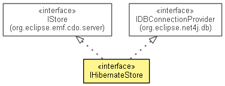

org.eclipse.emf.cdo.server.hibernate
Interface IHibernateStore
- All Superinterfaces:
- IDBConnectionProvider, IStore, IStore.CanHandleClientAssignedIDs
- public interface IHibernateStore
- extends IStore, IDBConnectionProvider, IStore.CanHandleClientAssignedIDs

The Hibernate store manages the Hibernate SessionFactory and the installed
EPackage instances.
- Since:
- 4.0
- No Implement
- This interface is not intended to be implemented by clients.
- No Extend
- This interface is not intended to be extended by clients.
| Methods inherited from interface org.eclipse.emf.cdo.server.IStore |
createObjectID, getCreationTime, getIndicatingCommitDistributor, getLastBranchID, getLastCommitTime, getLastLocalBranchID, getLastNonLocalCommitTime, getObjectIDTypes, getPersistentProperties, getReader, getRepository, getRevisionParallelism, getRevisionTemporality, getSupportedChangeFormats, getSupportedRevisionParallelisms, getSupportedRevisionTemporalities, getType, getWriter, isFirstStart, removePersistentProperties, setPersistentProperties |
QUERY_LANGUAGE
static final String QUERY_LANGUAGE
- Since:
- 4.0
- See Also:
- Constant Field Values
FIRST_RESULT
static final String FIRST_RESULT
- Since:
- 4.0
- See Also:
- Constant Field Values
CACHE_RESULTS
static final String CACHE_RESULTS
- If results should be cached in the query cache, only needed if they are accessed directly as part of the query.
- Since:
- 4.0
- See Also:
- Constant Field Values
getHibernateConfiguration
org.hibernate.cfg.Configuration getHibernateConfiguration()
getHibernateSessionFactory
org.hibernate.SessionFactory getHibernateSessionFactory()
Copyright (c) 2011, 2012 Eike Stepper (Berlin, Germany) and others.